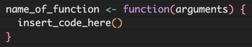
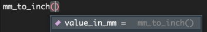

Iterating part II: writing custom functions and purrr:map()
Instead of using loops, we can iterate with functions!
functions
functional programming
purrr
1 Introduction
You might find yourself in a situation where you are copying and pasting your code multiple times, changing a single variable. This could be situation where you want to run a series of statistical tests, each with a different response variable. Or, you want to make a series of plots, adjusting which variables are on the x-axis. This is generally not a good idea, as it is error prone and inefficient.
We are spending this module going through things you can do to avoid copy and pasting your code. Last week we went over writing and using for loops. Today we are going to talk about:
- writing your own functions
- iterating with those functions using
purrr:map()
We will start, like we typically do, by loading the packages we will use today.
library(tidyverse) # for wrangling and everything
library(palmerpenguins) # for penguins data
library(glue) # for easy pasting of names2 Writing functions
There are many functions that exist in R, both built into the base functionality, and addition ones we can access by loading different packages. We have talked about functions before in Code Club, and you may be using them without explicitly realizing they are functions. For example, mean() is a function that calculates the mean of an object (usually a vector).
There are some functions which are by default available when you load R (like mean()), and others that exist within packages that require you to load those packages (e.g., tidyverse) before they can be used (e.g., ggplot()).
But, there may be situations where we want to do something in R, and a function does not exist to do this task. This could be because the operation you want to do is so specific to you that no other person could have possibly wanted to do that, or simply that no one has gotten around to writing a built in function yet. This is where writing your own functions can be very useful.
2.1 General syntax
The general syntax of a function is like this:
name_of_function <- function(arguments) {
insert_code_here()
}You can pass multiple arguments to a function, but we are going to start simply with a function that takes one argument.
2.2 Functions with one argument
Here, I am writing a little function to do something simple, like calculate from millimeters to inches.
mm_to_inch <- function(value_in_mm) {
value_in_mm * 0.0393701 # code to convert from mm to inch
}Here, we would call value_in_mm our argument or parameter. Remember that this is a user-defined term, you could call this x, i, or really whatever you want. I like giving the arguments easy-to-read and easy-to-remember names.
Now that we’ve made a function, we can see it in our environment under the “Functions” header.

If we click on this item, we can see the details of the function.

If we start typing our function, and put our cursor between the parentheses and press tab, we can also see some information about our function.

We can now pass arguments to our new function, here we will try passing 100 mm and see what that would be in inches.
mm_to_inch(value_in_mm = 100)[1] 3.93701Because our function only takes one argument, we can be less explicit and remove value_in_mm and get the same result.
mm_to_inch(100)[1] 3.93701We also might want to pass a whole column or vector to our function, which we can also do.
mm_to_inch(penguins$bill_length_mm) [1] 1.539371 1.555119 1.586615 NA 1.444883 1.547245 1.531497 1.543308
[9] 1.342520 1.653544 1.488190 1.488190 1.618111 1.519686 1.362205 1.440946
[17] 1.523623 1.673229 1.354331 1.811025 1.488190 1.484253 1.413387 1.503938
[25] 1.527560 1.389765 1.598426 1.594489 1.492127 1.594489 1.555119 1.464568
[33] 1.555119 1.610237 1.433072 1.543308 1.527560 1.661418 1.480316 1.566930
[41] 1.437009 1.606300 1.417324 1.736221 1.456694 1.559056 1.618111 1.476379
[49] 1.417324 1.665355 1.559056 1.578741 1.377953 1.653544 1.358268 1.629922
[57] 1.535434 1.598426 1.437009 1.480316 1.405513 1.625985 1.480316 1.618111
[65] 1.433072 1.637796 1.397639 1.618111 1.413387 1.645670 1.318898 1.562993
[73] 1.559056 1.803151 1.397639 1.685040 1.610237 1.464568 1.425198 1.657481
[81] 1.362205 1.688977 1.444883 1.381891 1.468505 1.625985 1.429135 1.452757
[89] 1.507875 1.531497 1.405513 1.618111 1.338583 1.559056 1.425198 1.606300
[97] 1.500001 1.586615 1.303150 1.700788 1.377953 1.614174 1.484253 1.488190
[105] 1.492127 1.562993 1.519686 1.503938 1.500001 1.700788 1.500001 1.795277
[113] 1.562993 1.661418 1.559056 1.681103 1.519686 1.468505 1.405513 1.618111
[121] 1.425198 1.484253 1.582678 1.629922 1.385828 1.598426 1.527560 1.633859
[129] 1.535434 1.736221 1.515749 1.696851 1.448820 1.476379 1.500001 1.618111
[137] 1.401576 1.582678 1.456694 1.562993 1.582678 1.598426 1.263780 1.602363
[145] 1.468505 1.535434 1.543308 1.440946 1.417324 1.488190 1.417324 1.633859
[153] 1.814962 1.968505 1.917324 1.968505 1.874017 1.830710 1.787403 1.838584
[161] 1.704725 1.842521 1.610237 1.929135 1.791340 1.905513 1.803151 1.940946
[169] 1.653544 1.937009 1.818899 1.917324 1.976379 1.775592 1.830710 1.822836
[177] 1.688977 1.814962 1.751969 1.881891 1.897639 1.968505 1.862206 1.685040
[185] 1.775592 2.346458 1.933072 1.905513 1.677166 1.748032 1.732284 1.917324
[193] 1.681103 1.952757 1.783466 1.952757 1.988190 1.716536 1.791340 1.988190
[201] 1.767717 1.779529 1.834647 1.909450 1.775592 1.972442 1.830710 1.771654
[209] 1.724410 1.791340 1.700788 1.984253 1.783466 1.818899 1.799214 2.137796
[217] 1.803151 1.960631 1.818899 1.948820 1.712599 1.996064 1.877954 1.826773
[225] 1.897639 1.830710 1.826773 1.913387 1.870080 2.011812 1.779529 1.779529
[233] 1.933072 2.066930 1.866143 1.968505 1.767717 2.000001 1.708662 2.019686
[241] 1.870080 2.051182 1.870080 2.055119 1.791340 1.948820 1.751969 2.000001
[249] 1.944883 1.846458 1.905513 2.011812 1.909450 2.200789 1.858269 1.933072
[257] 1.862206 1.842521 1.641733 2.102363 1.704725 1.893702 1.988190 1.960631
[265] 1.712599 2.027560 1.818899 2.169293 1.751969 1.921261 1.858269 NA
[273] 1.842521 1.984253 1.779529 1.964568 1.830710 1.968505 2.019686 1.787403
[281] 2.074804 1.779529 1.814962 2.019686 1.811025 2.019686 1.834647 2.035434
[289] 1.850395 2.047245 1.807088 1.988190 1.980316 2.283466 1.826773 1.937009
[297] 1.669292 1.909450 1.700788 1.992127 1.838584 2.047245 1.988190 1.948820
[305] 1.826773 2.078741 1.610237 2.133859 1.673229 2.007875 1.956694 1.870080
[313] 1.874017 2.047245 1.846458 2.106300 1.929135 1.818899 2.003938 1.791340
[321] 2.003938 2.000001 1.972442 1.929135 2.027560 1.960631 1.893702 2.023623
[329] 1.799214 1.996064 1.673229 2.055119 1.779529 1.940946 1.976379 1.795277
[337] 2.043308 1.842521 1.799214 2.196852 1.712599 1.952757 2.000001 1.976379Instead of just printing this information, we might want to save it in our dataframe, which we can do by nesting our function within a mutate() function. Remember that mutate() works with the syntax new_column = function(existing_variables). Also remember that by default, new columns are added after the last column (and if you want to also reorder, you can do that with select()).
penguins |>
mutate(bill_length_inch = mm_to_inch(bill_length_mm))# A tibble: 344 × 9
species island bill_length_mm bill_depth_mm flipper_length_mm body_mass_g
<fct> <fct> <dbl> <dbl> <int> <int>
1 Adelie Torgersen 39.1 18.7 181 3750
2 Adelie Torgersen 39.5 17.4 186 3800
3 Adelie Torgersen 40.3 18 195 3250
4 Adelie Torgersen NA NA NA NA
5 Adelie Torgersen 36.7 19.3 193 3450
6 Adelie Torgersen 39.3 20.6 190 3650
7 Adelie Torgersen 38.9 17.8 181 3625
8 Adelie Torgersen 39.2 19.6 195 4675
9 Adelie Torgersen 34.1 18.1 193 3475
10 Adelie Torgersen 42 20.2 190 4250
# ℹ 334 more rows
# ℹ 3 more variables: sex <fct>, year <int>, bill_length_inch <dbl>2.3 Embedding built in functions
We can also use other functions inside our function. For example, R does not by default have a function that calculates the coefficient of variation for a variable. We can write that ourselves though so it’s fine.
# calculate the coefficient of variation by
# dividing the standard deviation by the mean
cv <- function(x) {
(sd(x)/mean(x))
}2.4 Functions with two arguments
We can also write functions that take more than one argument. Here is a simple example for calculating BMI, which is weight in kg divided by height in meters squared.
calculate_bmi <- function(weight_kg, height_cm) {
weight_kg/(height_cm/100)^2
}calculate_bmi(weight_kg = 80, height_cm = 180)[1] 24.69136If you provide your arguments in the order they are expected (here, weight_kg and then height_cm), then you don’t need to specify which is which. But, iif you want to give the arguments in a different order you need to be explicit.
# this is wrong
calculate_bmi(180, 80)[1] 281.25# this is better
calculate_bmi(height_cm = 180, weight_kg = 80)[1] 24.691362.5 Functions with one argument practice
Write two functions that convert between degrees Fahrenheit and degrees Celsius and test to see if they work.
Need a hint?
°C = (°F - 32) × 5/9 or °F = (°C * 9/5) + 32
Click for the solution
# create a function to convert F to C
degF_to_degC <- function(deg_F) {
(deg_F - 32) * (5/9)
}
# create a function to convert C to F
degC_to_degF <- function(deg_C) {
(deg_C * (9/5)) + 32
}degF_to_degC(deg_F = 32)[1] 0degF_to_degC(deg_F = 100)[1] 37.77778degC_to_degF(deg_C = 0)[1] 32degC_to_degF(deg_C = -40)[1] -402.6 Plotting functions
Now that we are a little comfortable with writing functions, we can make ones that are a little more complicated.
We can also write a function to make our plot.
species_bill_plotting <- function(focal_species) {
penguins |>
filter(species == focal_species) |>
drop_na() |>
ggplot(aes(x = bill_length_mm, y = bill_depth_mm, color = sex)) +
geom_point() +
geom_smooth(method = "lm", # use a linear model
se = FALSE) + # turn off confidence interval
scale_color_brewer(palette = "Dark2") +
labs(title = focal_species, # put the species name as the title
x = "Bill length (mm)",
y = "Bill depth (mm)",
color = "Sex",
caption = "Data collected from LTER, Antarctica") +
theme_classic()
}Then, we can pass our argument to the plot, here, the name of the species we want to plot. This is a useful tool for making many plots with the same structure.
species_bill_plotting("Adelie")`geom_smooth()` using formula = 'y ~ x'
We can then pass this function in a for loop with some simpler looking code (because the bulk of it is elsewhere).
penguin_species <- unique(penguins$species)
for (focal_species in penguin_species) {
# pass each focal species to the species_bill_plotting function
plot <- species_bill_plotting(focal_species)
# save the plots
filename <- glue("figs/{focal_species}_bill-dimensions.png") # create filename
ggsave(filename, plot) # save the plot to file
}Saving 7 x 5 in image
`geom_smooth()` using formula = 'y ~ x'
Saving 7 x 5 in image
`geom_smooth()` using formula = 'y ~ x'
Saving 7 x 5 in image
`geom_smooth()` using formula = 'y ~ x'2.7 Writing plotting functions practice
Write a function to make a series of boxplots that show the difference in body_mass_g between male and female penguins by species. Feed one species to your function to check if it works (you don’t need to iterate with it yet).
Need a hint?
Check back to our example where we used a for loop to see how to make this plot.
Click for the solution
# create the function
body_mass_by_sex_plotting <- function(focal_species) {
penguins |>
filter(species == focal_species) |>
drop_na(sex, body_mass_g) |>
ggplot(aes(x = sex, y = body_mass_g, color = sex)) +
geom_boxplot() +
theme_minimal() +
scale_color_brewer(palette = "Dark2") +
theme(legend.position = "none") + # don't need one bc duplicative with x-axis
labs(x = "Sex",
y = "Body mass (grams)",
title = focal_species)
}
# apply the function to Adelie penguins
body_mass_by_sex_plotting("Adelie")
3 Iteration with purrr:map
To simplify our code, we could replace our for loop with one of the tidyverse:purrr functions intended for functional program that being with map*().
But before we do this, we need to learn a little bit about lists.
3.1 About lists
A list is a new data structure for Code Club. A list can contain other data structures, like data frames, vectors or others, within it.
To see what a list looks like, we will look under the hood at the object that comprises a ggplot plot. We have one in our environment called plot so let’s look at that.
View(plot)We can see that in this case, plot is a list which contains 11 objects, many of which also contain sub-objects. For example, data is a dataframe that. contains the data underlying our plot. It is a tibble type of dataframe with 68 rows and 8 columns.
If I want to access that first item in the list, I can do that in a few different ways.
I can use the dollar sign operator $ to extract parts of the list
plot$data# A tibble: 68 × 8
species island bill_length_mm bill_depth_mm flipper_length_mm body_mass_g
<fct> <fct> <dbl> <dbl> <int> <int>
1 Chinstrap Dream 46.5 17.9 192 3500
2 Chinstrap Dream 50 19.5 196 3900
3 Chinstrap Dream 51.3 19.2 193 3650
4 Chinstrap Dream 45.4 18.7 188 3525
5 Chinstrap Dream 52.7 19.8 197 3725
6 Chinstrap Dream 45.2 17.8 198 3950
7 Chinstrap Dream 46.1 18.2 178 3250
8 Chinstrap Dream 51.3 18.2 197 3750
9 Chinstrap Dream 46 18.9 195 4150
10 Chinstrap Dream 51.3 19.9 198 3700
# ℹ 58 more rows
# ℹ 2 more variables: sex <fct>, year <int>Or, I can use indexing to extract out the first item in our list.
plot[1]$data
# A tibble: 68 × 8
species island bill_length_mm bill_depth_mm flipper_length_mm body_mass_g
<fct> <fct> <dbl> <dbl> <int> <int>
1 Chinstrap Dream 46.5 17.9 192 3500
2 Chinstrap Dream 50 19.5 196 3900
3 Chinstrap Dream 51.3 19.2 193 3650
4 Chinstrap Dream 45.4 18.7 188 3525
5 Chinstrap Dream 52.7 19.8 197 3725
6 Chinstrap Dream 45.2 17.8 198 3950
7 Chinstrap Dream 46.1 18.2 178 3250
8 Chinstrap Dream 51.3 18.2 197 3750
9 Chinstrap Dream 46 18.9 195 4150
10 Chinstrap Dream 51.3 19.9 198 3700
# ℹ 58 more rows
# ℹ 2 more variables: sex <fct>, year <int>3.2 map()
The simplest of the functions in purrr is map(), which applies a function over each element of a vector, and returns a list. There are some basics we will have to go over for this to make sense.
The map(), we provide a vector/list to iterate over, and a function, like this:
map(.x = 1:5, # our vector to apply our function over
function(x) x + 1) # what the function is[[1]]
[1] 2
[[2]]
[1] 3
[[3]]
[1] 4
[[4]]
[1] 5
[[5]]
[1] 6Now let’s get back to the function we wrote to make our plots - instead of incorporating this into a for loop, we can apply it within map() like this:
map(penguin_species, # vector to iterate over
species_bill_plotting) # function to use[[1]]`geom_smooth()` using formula = 'y ~ x'
[[2]]`geom_smooth()` using formula = 'y ~ x'
[[3]]`geom_smooth()` using formula = 'y ~ x'Wow that was simple!
We could also incorporate both the printing and saving of the plot into one function like this:
species_bill_plotting_saving <- function(focal_species) {
# create plot and assign it to something
plot_via_function <- penguins |>
filter(species == focal_species) |>
drop_na() |>
ggplot(aes(x = bill_length_mm, y = bill_depth_mm, color = sex)) +
geom_point() +
geom_smooth(method = "lm", # use a linear model
se = FALSE) + # turn off confidence interval
scale_color_brewer(palette = "Dark2") +
labs(title = focal_species, # put the species name as the title
x = "Bill length (mm)",
y = "Bill depth (mm)",
color = "Sex",
caption = "Data collected from LTER, Antarctica") +
theme_classic()
# print
print(plot_via_function)
# save
filename <- glue("figs/{focal_species}_bill-dimensions-via-function.png") # choose filename
ggsave(filename, plot_via_function) # save the plot to file
}Then, this code will:
- Generate your plots
- Print those plots for you to view in RStudio
- Save those plots in a directory called
figsin your working directory
map(penguin_species, # vector to iterate over
species_bill_plotting_saving) # function to apply`geom_smooth()` using formula = 'y ~ x'
Saving 7 x 5 in image
`geom_smooth()` using formula = 'y ~ x'
`geom_smooth()` using formula = 'y ~ x'
Saving 7 x 5 in image
`geom_smooth()` using formula = 'y ~ x'
`geom_smooth()` using formula = 'y ~ x'
Saving 7 x 5 in image
`geom_smooth()` using formula = 'y ~ x'[[1]]
figs/Adelie_bill-dimensions-via-function.png
[[2]]
figs/Gentoo_bill-dimensions-via-function.png
[[3]]
figs/Chinstrap_bill-dimensions-via-function.png3.3 Functions with more arguments practice
Try applying your function you made to create a series of boxplots for body mass by sex over each of the penguin species, though edit it so it both prints and saves your plots.
Need a hint?
Here is my hint
Click for the solution
Edit the function to include printing and saving.
species_body_mass_sex_plotting_saving <- function(focal_species) {
my_plot <- penguins |>
filter(species == focal_species) |>
drop_na(sex, body_mass_g) |>
ggplot(aes(x = sex, y = body_mass_g, color = sex)) +
geom_boxplot() +
theme_minimal() +
scale_color_brewer(palette = "Dark2") +
theme(legend.position = "none") + # don't need one bc duplicative with x-axis
labs(x = "Sex",
y = "Body mass (grams)",
title = focal_species)
# print
print(my_plot)
# save
filename <- glue("figs/{focal_species}_body-mass-by-sex.png") # choose filename
ggsave(filename, my_plot) # save the plot to file
}Apply the function across the species
map(penguin_species, # what to iterate over
species_body_mass_sex_plotting_saving) # the function to iterate with
Saving 7 x 5 in imageSaving 7 x 5 in imageSaving 7 x 5 in image[[1]]
figs/Adelie_body-mass-by-sex.png
[[2]]
figs/Gentoo_body-mass-by-sex.png
[[3]]
figs/Chinstrap_body-mass-by-sex.png